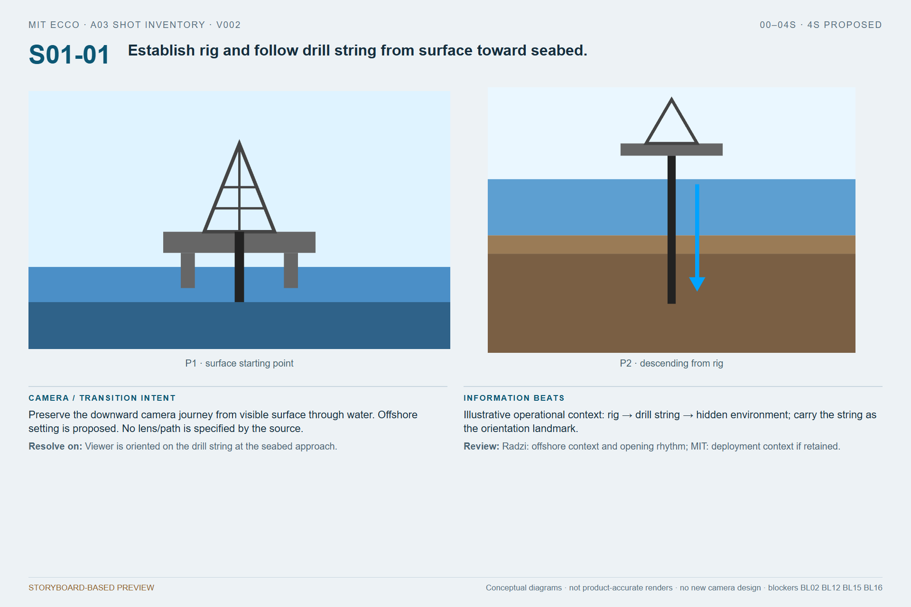

S01-01
Establish rig and follow drill string from surface toward seabed.
Open full image · Editable preview pageCamera intent / review
Preserve the downward camera journey from visible surface through water. Offshore setting is proposed. No lens/path is specified by the source.
Radzi: offshore context and opening rhythm; MIT: deployment context if retained.
BL02 BL12 BL15 BL16